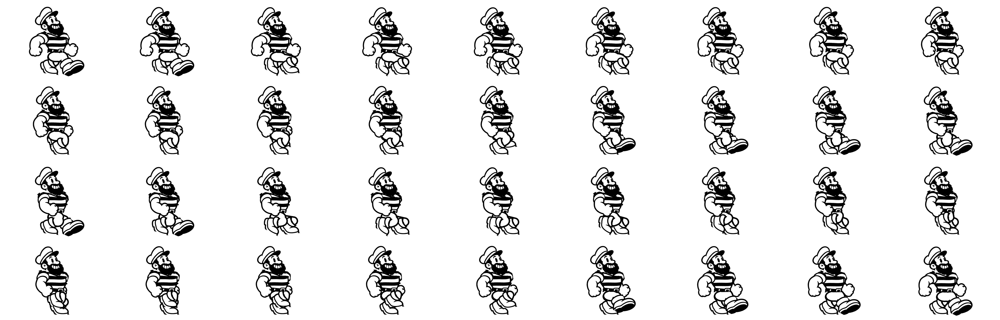

Dock Walk
The Johansson sailor takes an easy stroll along the quay, whistling. Johansson Animation Studios, 2026.
The walk cycle
Thirty-six drawings make two steps. His head, shirt, arms and boots are cut from the original character sheet; only the trouser legs are redrawn for each frame.
